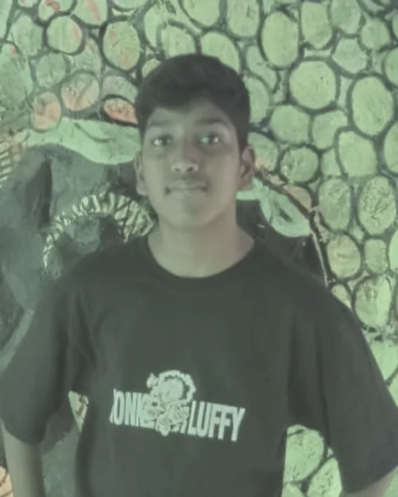

STOGO Fest 2026-27 · Stream 02, Substance Safety
Who made this, and why.
This is a school project, and this is the only page here that is about us instead of about you. That is why it is last. There is nothing on it you need.
What it was made for
STOGO Fest V4.0
STOGO Fest is a school festival that runs to a national and then an international round. This year its theme is Reboot: The Rhythm of Life, and every entry has to sit inside one of three streams — Digital Safety, Substance Safety, or Sustainability.
We took the second one. A stream called Substance Safety could be answered with a poster telling you not to, and that has been tried on all of us for years. So we answered it twice instead, with a game and with this, and both of them start from the same place: the person who is using is not the enemy of the person trying to help.
stogofest.com- Theme
- Reboot: The Rhythm of Life
- Stream
- 02 — Substance Safety
- Track
- 01 — Working Model
- Category
- 2 — Grades 7 to 9
- National round
- 25 November 2026
- International round
- 14 January 2027
Who made it
Two of us, and neither of us made all of it.
Class VIII-B · Amrita Vidyalayam, Erode, Tamil Nadu
-
Badriprasath K.V
Story, direction, and this website
Wrote the story and the cut scenes for PULSE, directed it, and did the visual side. Wrote 45 per cent of the game code.
Built this website on its own, which is the part of the entry that is only mine.
-

Ravi Kishor R.
Most of the code, and Act I
Wrote 55 per cent of the game code — the larger half — including the whole of Act I. Worked on the visuals, and assisted the direction.
He did not work on this website; that part is mine. His name is here because the project is both of ours and half the code is his.
The other half of the entry
PULSE — Reboot the Rhythm.
A game about a fourteen-year-old called Kavi whose older brother Aru goes quiet. Kavi carries a light in his chest, and so does everybody else, and you can see whose has gone out. It is set in a city called Nadanagar: a terrace, a fish market after closing, and a metro tunnel nobody finished building.
The thing you fight is called the Hush, and it never raises its voice once. It offers to make everything quiet. That is the whole horror of it, and it is the reason the game has a website: the argument PULSE makes in three hours is the argument this site makes in eight pages, which is that you cannot pull somebody up from lower down than they are, and that asking for help is not the same as giving up.
It never names a substance either. Not once, in about two thousand four hundred words of dialogue. That was a rule before it was a design.
-
Act I — Dimming
Built by Ravi Kishor
Five levels, from a warm terrace at six in the evening down into the tunnel. Your light is the only light. It gets smaller.
-
Act II — Reboot
Built by Badriprasath
Five more, from a grey room at four in the morning back down the same stairs — this time with a friend holding a torch, a teacher, a grandmother and a doctor waiting at the top.
How this site is built
Eight pages, no account, nothing saved.
Every page here is a plain HTML file. There is no login, no database, no analytics and no third-party script of any kind, and that is not a shortcut — it is the promise the site makes on its first screen. Your browser is told to block outgoing connections, so the claim is enforced by the browser and not by us saying so.
Every factual claim on the site has a row in a public sources page, including the ones about what the law does. Every photograph is credited there, and so is the fact that most of the pictures here were generated rather than taken.
Where everything here comes from- Pages
- Eight, static, no server
- Built with
- Astro
- Saved about you
- Nothing
- Sent anywhere
- Nothing
- Cookies
- None
The card at the end of the game
If someone you love has gone quiet, you are not betraying them by telling someone.
You are just refusing to do it alone.